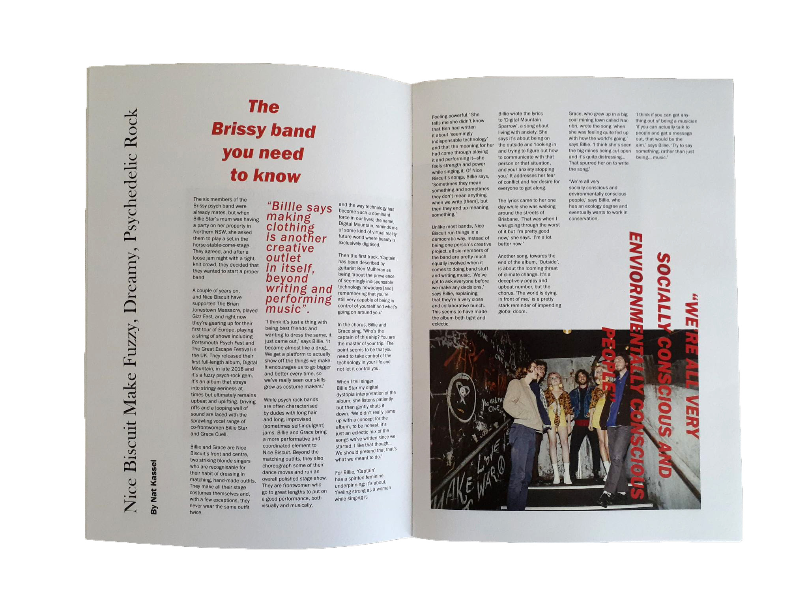
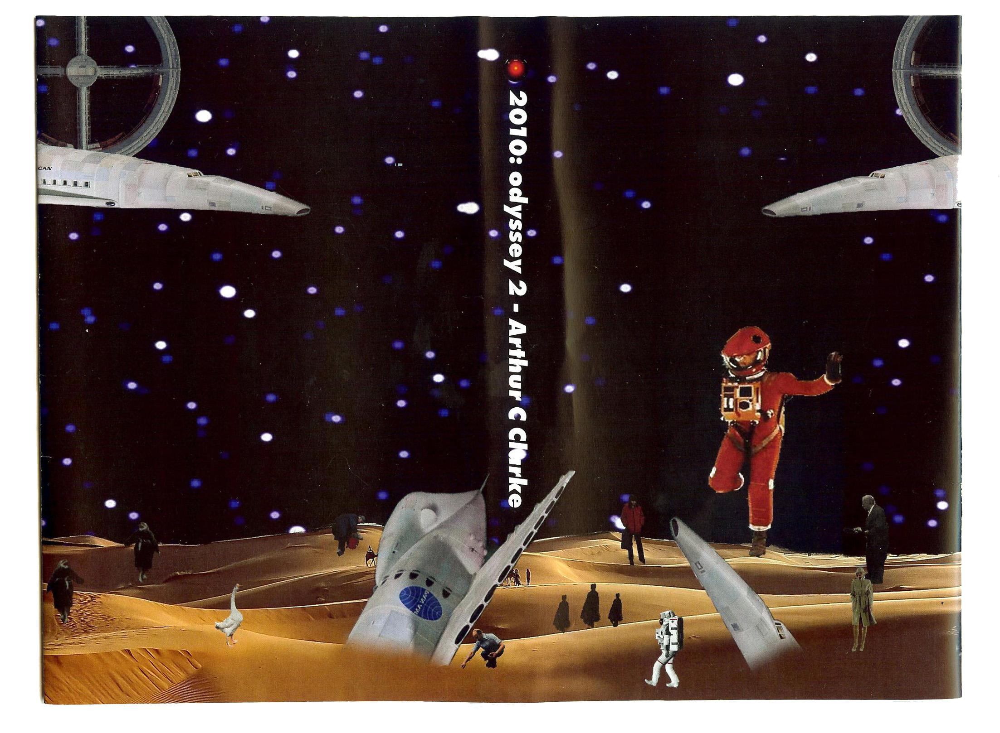

This form of print media is something I would love to produce more of in the future. Designing for the independent music scene is an area of interest I would love to immerse my creative practice in as a designer.
This form of print media is something I would love to produce more of in the future. Designing for the independent music scene is an area of interest I would love to immerse my creative practice in as a designer.
 Baked Beans are an underground garage psychedelic rock band from Geelong. They produce psychedelic garage rock music with a strong retro vibe which has a modern flair to their sound. My simple yet sloppy quality to my design, replicates their sound visually.
Baked Beans are an underground garage psychedelic rock band from Geelong. They produce psychedelic garage rock music with a strong retro vibe which has a modern flair to their sound. My simple yet sloppy quality to my design, replicates their sound visually.
 My campaign is spread across the two distributions of A0 sized posters and A4 sized flyers with a strong punk aesthetic. My campaign is having both an attack on the Federal Government for having no support for the arts, as well as informing the public of the recent government arts funding cuts. The role of the campaign is to both inform and bring to people's attention how important Australia's creative culture is to both the economy as well as to the cultural identity of Australia.
My campaign is spread across the two distributions of A0 sized posters and A4 sized flyers with a strong punk aesthetic. My campaign is having both an attack on the Federal Government for having no support for the arts, as well as informing the public of the recent government arts funding cuts. The role of the campaign is to both inform and bring to people's attention how important Australia's creative culture is to both the economy as well as to the cultural identity of Australia.
 I was influenced by the designer Jamie Reid’s use of both collage design as well as the application of simple bold colours for both of my forms of distribution. Jamie Reid often uses objects such as ski masks to obscure politicians/celebrities faces in his work, which I additionally incorporated into my own work through adding a ski mask over Prime Minister Scott Morrison’s face. Reinforcing the punk aesthetic while defacing the prime minster through my design.
I was influenced by the designer Jamie Reid’s use of both collage design as well as the application of simple bold colours for both of my forms of distribution. Jamie Reid often uses objects such as ski masks to obscure politicians/celebrities faces in his work, which I additionally incorporated into my own work through adding a ski mask over Prime Minister Scott Morrison’s face. Reinforcing the punk aesthetic while defacing the prime minster through my design.
 My processes of creating my posters and flyers were through creating my collage on Photoshop and then exporting each design as a bitmap file which created the grungy punk aesthetic to my posters as well as creating the distorted yet still punk in appearance flyer designs. My typeface of choice was Schmalfette, which further provided me with the ability to create and design poster and flyer designs with a strong punk aesthetic.
My processes of creating my posters and flyers were through creating my collage on Photoshop and then exporting each design as a bitmap file which created the grungy punk aesthetic to my posters as well as creating the distorted yet still punk in appearance flyer designs. My typeface of choice was Schmalfette, which further provided me with the ability to create and design poster and flyer designs with a strong punk aesthetic.
My idea for distributing my posters and flyers are primarily through protests. Having protestors holding and displaying my posters will be effective to communicate the public’s outrage to the government as well as visually informing and educating other protestors about the issue. My ideas for the flyers are to also display them around CBD walls and electricity poles enabling pedestrians to pick up a flyer or even take a photo of a flyer with their phone. I also intend to display my posters and flyers throughout creative parts of Melbourne (such as the Collingwood arts precinct) showing support for affected stakeholders of the issue as well as providing affected stakeholders with access to my campaign.

The publication is called 'Monster Children Newspaper' which was a newspaper of content sourced from Monster Children Magazine. This publication was printed on a low-quality paper stock, to give the publication a newspaper look and feel as well as reinforcing the grungy DIY aesthetic of some of the articles within the publication.
 I experimented with creating more dynamic compositions with both the body text and headings and in doing so I tried creating a more graphic appeal to both the images used and typography.
I experimented with creating more dynamic compositions with both the body text and headings and in doing so I tried creating a more graphic appeal to both the images used and typography.
